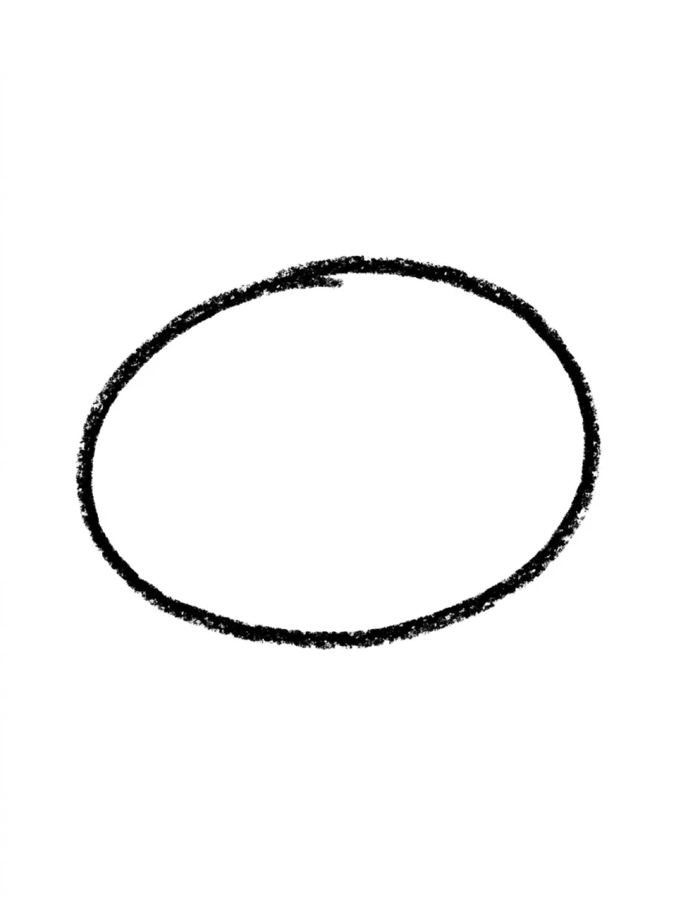
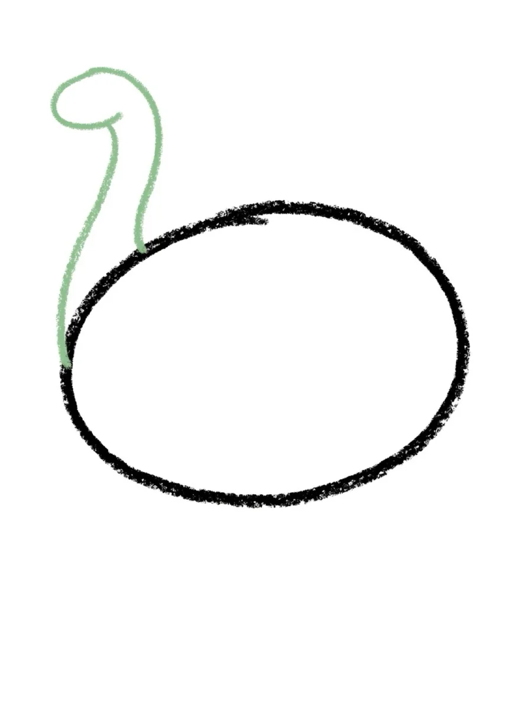
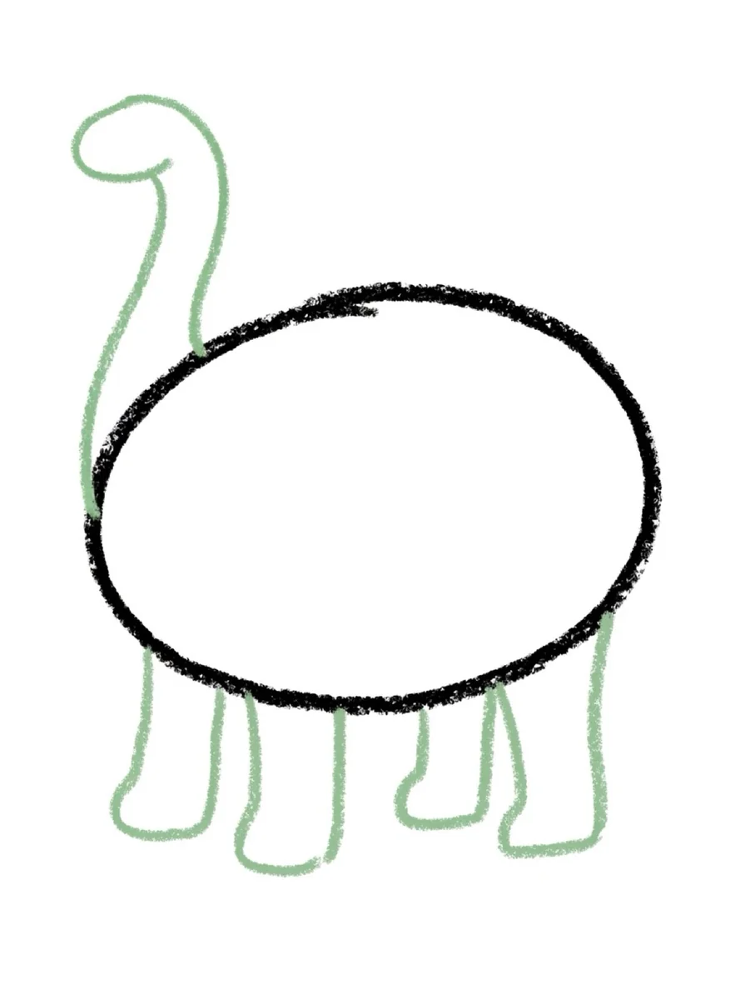
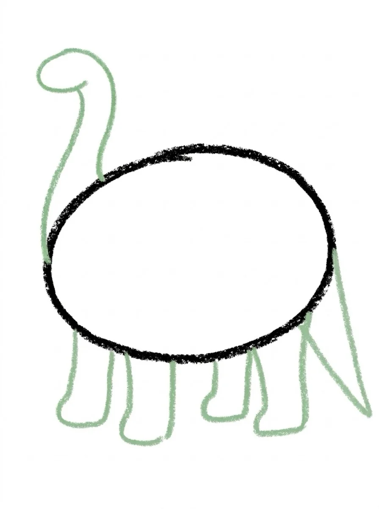
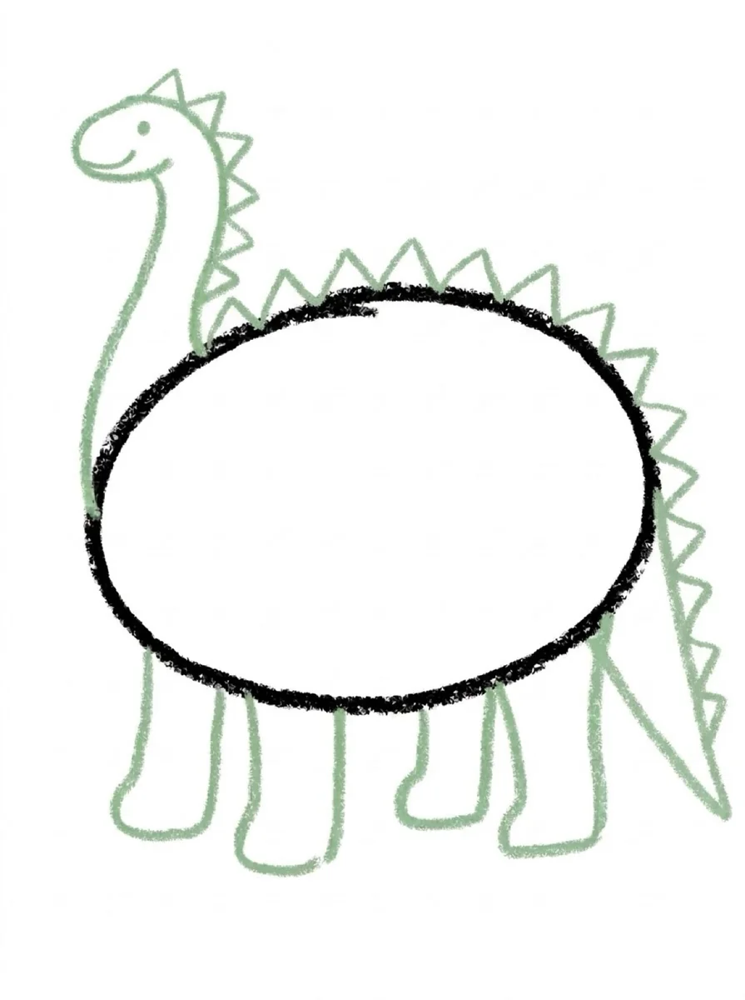
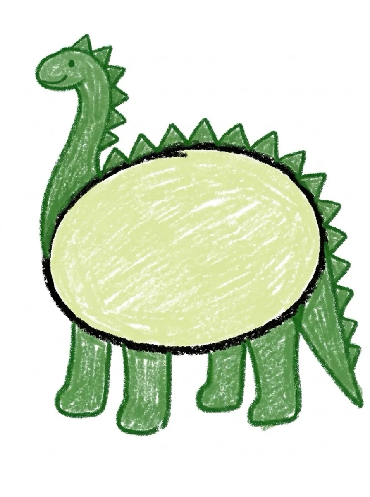

Dinosaur Drawing for Kids How to Draw a Dinosaur in 6 Easy Steps
Every kid goes through a dinosaur phase, and drawing one makes it last longer. This friendly brontosaurus-style dino is all ovals and triangles — no scary teeth required. Gentle giant energy only.
Quick Answer
This free step-by-step tutorial shows kids how to draw a dinosaur in six easy steps: a big oval body, a long neck with head, sturdy legs, a tail, back spikes, and color. Download the printable PDF, grab crayons, and follow along together. Made for ages 5 and up — no signup needed, just print and draw.
At a Glance
- Subject: How to draw a dinosaur
- Ages: 5+
- Steps: 6 steps
- Time: ~15 min
- Difficulty: Easy-Medium
- Supplies: Paper, crayons
✏️ How to Draw a Dinosaur: Step by Step
One step per box — draw each new part in a different color so kids can see exactly what changed.
Step 1: The Big Body

Draw a big sideways oval for the dinosaur's body — the biggest shape on the page.
Step 2: Long Neck and Head

Draw a long curved neck rising from the front of the body, with a small rounded head on top.
Step 3: Sturdy Legs

Draw four thick column legs under the body — dinosaurs need strong legs.
Step 4: The Tail

Draw a long triangle tail stretching out behind the body, getting thinner toward the tip.
Step 5: Spikes and Face

Add triangle spikes along the back and neck, plus a dot eye and a smile.
Step 6: Color It In

Color it green with a lighter belly — or make a purple dinosaur, no rules!
📊 Dinosaur Drawing by Age
Every age can join in — just adjust the job.
| Age | What they can do | Tip |
|---|---|---|
| 3–4 | Trace the big oval body and color it | The long neck is hard — draw it together hand-over-hand |
| 4–5 | Draw the body, neck, and legs with help | Count the spikes together as you add them |
| 6+ | Draw the whole dinosaur solo | Challenge: draw a baby dino next to the big one |
🖨️ Download Your Free Dinosaur Drawing Printable
The printable lays out all 6 steps one per box, big enough for little hands — kids draw right alongside each step.
⬇️ Download Free Printable 🖨️ Print🎁 Free printable for ages 3+
More Drawing Pages
Tap any picture to open its tutorial and draw along step by step.
🦕 Prehistoric Diorama
Draw your dinosaur in a prehistoric landscape — triangle mountains, a volcano with red lava, giant fern leaves. The setting turns a single animal into a whole world. Kids who love dinosaurs will happily spend 30 minutes on the background alone.
🦕 Brontosaurus in the Real World
The long-necked dinosaur in this drawing is a Brontosaurus — a plant-eater so big that a grown one weighed about as much as three elephants. Its long neck worked like a crane for reaching leaves, and its tail stretched out behind like a counterweight. For such a giant, it had a remarkably small head, which is why the drawing's proportions look funny and are exactly right.
Brontosaurus also has a famously argued-over name: scientists spent decades debating whether it was really its own dinosaur or just an Apatosaurus wearing the wrong label. The argument is part of the fun to share — even the experts had to check their work twice on this one. Dinosaurs like it vanished 66 million years ago; everything we know comes from bones turned to stone. Give your dinosaur a rival from how to draw a t-rex — or a magical cousin in how to draw a unicorn.
What You'll Need to Draw a Dinosaur
Green is the go-to, but dinosaurs can be any color — purple and blue dinos are very popular with kids. The bumpy back plates or spikes need careful triangle work. A darker shade for outlines helps the dino stand out. Big paper is better here; dinosaurs deserve to be drawn LARGE.
What They're Learning
Dinosaurs combine big shapes (body, head) with small details (spikes, claws, teeth) — managing both scales on one drawing is a real planning challenge. The long neck and tail (extended curves) push kids beyond compact shapes into elongated forms. It's also a great lesson that you can invent details — nobody knows exactly what colors dinosaurs were.
Make It Yours
Add spikes along the back for a stegosaurus look, or a long neck for a brontosaurus. Draw a volcano erupting in the background, palm trees for the prehistoric landscape, or a baby dino hatching from an egg. Footprints trailing behind the dinosaur tell a story about where it's been. A whole herd at different sizes is an impressive fridge piece.
🛒 Our Favorite Drawing Supplies
These are the supplies we reach for in our own home — washable (because kids), quality paper, and enough colors to avoid fights.
As an Amazon Associate, MomYouNeedThis earns from qualifying purchases — at no extra cost to you.
💡 Dinosaur Drawing Tips for Parents
The neck curve is this tutorial's known wobble — drawn straight, the dinosaur turns into a giraffe. The Fixes section's remedy is worth following literally: practice the curve twice on scrap paper before the real page, and for 3–4-year-olds draw it together hand-over-hand, the way the age table suggests. A head that lands too far forward is fine — it just makes a hungrier brontosaurus.
If the legs come out uneven, rescue them with the ground line from the Fixes section: one straight line under the body, all four legs standing on it. And when the coloring starts, defend the invented colors — What They're Learning makes the point that nobody knows exactly what colors dinosaurs were, so a purple dinosaur is not a mistake, it's a hypothesis.
🦕 Where a Dinosaur Drawing Easy Gets Wobbly (and How to Fix It)
The neck is where most dinosaurs go wrong. Drawn as a straight line up from the body, it turns the dinosaur into a giraffe — the neck has to curve, like a playground slide, with the small head sitting at the top of the curve. If the head lands too far forward, that is fine: a longer neck just makes it a hungrier brontosaurus. A step by step easy cute dinosaur drawing lives on that one curve, so it is worth practicing twice on scrap paper before the real page.
Legs cause the second wobble. Four thick legs sounds simple, but if two come out shorter, the dinosaur looks like it is tipping over. The rescue is a ground line: draw one straight line under the body first, and stand all four legs on it. Keep the legs chunky — thin legs on a huge oval body read as a table, not an animal. That sturdiness is exactly what keeps a dinosaur drawing easy for little kids: no delicate parts anywhere.
Spikes and tail finish the job. Spikes that point in different directions look like a mohawk, so lean every triangle the same way, following the curve of the back, and shrink them as they travel toward the tail. The tail itself should grow out of the back end of the body, low and long — a tail stuck on top of the back floats like a flag. Get those two things right and a step by step easy cute dinosaur drawing survives almost any wobbly line, which is why kids finish this one and immediately want a second dinosaur beside it.
✏️ Sketch It First, Then Make It Real
Older kids often want the grown-up version of this page: a sketch dinosaur drawing, the kind that starts as pale pencil lines instead of a finished outline. The method is the same six steps with a lighter hand — sketch the oval body, neck curve, and legs barely pressing the pencil, so every line can be erased or moved. A sketch dinosaur drawing stays wobbly on purpose until the shapes sit right; only then do you press down and ink the lines that earned it. Drawing this way teaches the habit real artists use: nothing is final until the last pass.
From the sketch, the jump to a real dinosaur drawing is four changes, and none of them need new shapes. Drop the smile — real dinosaurs did not grin — and shrink the eye to a small dot set high on the head. Lengthen the tail until it balances the neck like the counterweight it was, and give the legs toe lines and the skin some texture: short dashes along the back, wrinkle curves where the neck bends. Color settles it — gray-green or dusty brown instead of bright green. A real dinosaur drawing still uses this page's skeleton of shapes; it just stops being friendly, which is exactly what some kids are after.
🦴 Dinosaur Fossils Drawing: The Bones in the Rock
Every dinosaur fact on this page comes from fossils, so a dinosaur fossils drawing makes a fitting second project: the same dinosaur, drawn as bones in stone. Start with a big rounded rectangle or oval — the rock slab. Inside it, draw the skeleton lying on its side, as if it had just been dug up. The spine is a long curve of small bumps running the length of the slab, with arcs for ribs hanging off it and a tapering trail of smaller bumps for the tail.
The skull is the part kids ask for by name, and a dinosaur skull drawing is simpler than it looks: one rounded shape for the cranium, a long jaw shape under it, an eye socket circle left empty, and a row of small triangle teeth along the jaw. Add two leg bones — long shapes with knobby ends — tucked under the ribs, then crack lines across the rock corners and a few dots for gravel. Color the stone gray or sandy tan and leave the bones cream. A dinosaur fossils drawing finished this way looks like a museum piece, and it took the same ovals and curves as the living version above. Older kids who finish one usually want a second dinosaur skull drawing beside it — a rival fossil, still in its own rock.
📚 Keep Exploring
- ✏️ All 76 Drawing Tutorials 76 free step-by-step drawing tutorials for kids.
- 🐾 Animal Coloring Free printable animal coloring pages for little learners.
- ✏️ Drawing Practice Free printable drawing pre-writing worksheet for toddlers.
❓ Dinosaur Drawing FAQs
What is the easiest way for a kid to draw a dinosaur?
Draw a big sideways oval for the body and a long curved neck with a small head rising from the front. Add four thick legs, a tapering triangle tail, triangle spikes along the back, and a smiley face. Ovals and triangles — gentle giant, no scary parts.
What age can kids start learning to draw a dinosaur?
Most kids can manage the big shapes around age 5 with help, especially the long neck. Younger kids can trace the body oval and focus on coloring and spikes.
What supplies do we need to draw a dinosaur?
Paper and crayons or markers — green is classic, but purple dinosaurs are fully allowed. The free printable PDF lays out all six steps one per box so kids can draw right alongside each step.
Is the dinosaur drawing printable really free?
Yes — every printable on MomYouNeedThis is 100% free to download and print. No signup, no payment, just tap the download button.
Does this page teach a dinosaur brontosaurus drawing?
Yes — the tutorial on this page is a friendly long-necked brontosaurus: a big oval body, a small head carried high, sturdy legs, and a tail that trails off behind, with triangle spikes along the back as the finishing touch. The printable version is free below.
How do I print the dinosaur drawing tutorial?
Open the PDF and print at 100% scale (not 'fit to page') so the drawing boxes stay big enough for little hands. The printable is designed to stay large — never shrunk to force a fit. The print button opens the full-size page in a new tab if you prefer to print from there.
What is the easiest dinosaur drawing easy for kids?
A long-necked brontosaurus, like the one on this page: the body is a single big oval, and the neck, legs, and tail are simple tubes and a triangle. Gentle shapes and no teeth to fuss over — a good first dinosaur from about age 3.
How does a step by step easy cute dinosaur drawing work?
Each of the six pictures shows the dinosaur so far, with the newest part drawn in a fresh color. Your child copies just the colored part and compares as they go. Round eyes and a small smile are added near the end — that is where the cuteness arrives.
How do kids make a dinosaur T-Rex drawing from this tutorial?
Start with the body shape from the six steps on this page, then stand it up on two strong back legs, add two small arms, make the head bigger, and draw big triangle teeth in a wide-open mouth. That turns the friendly long-neck shape into a dinosaur T-Rex drawing kids recognize right away.